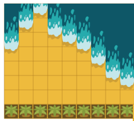
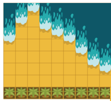

Trésor sous la mer
Castor a caché son trésor dans le sable.
Son ordinateur a enregistré la distance entre le trésor et la mer, et les rochers, et la distance entre le trésor et la forêt, mesurées par un laser.
Pour trouver le trésor, cliquez sur des cases. L'ordinateur de Castor dira si le trésor est plus près ou plus loin des rochers et de la forêt et de la mer.
Dans cette version, on ne voit pas la mer ni la forêt.


 
